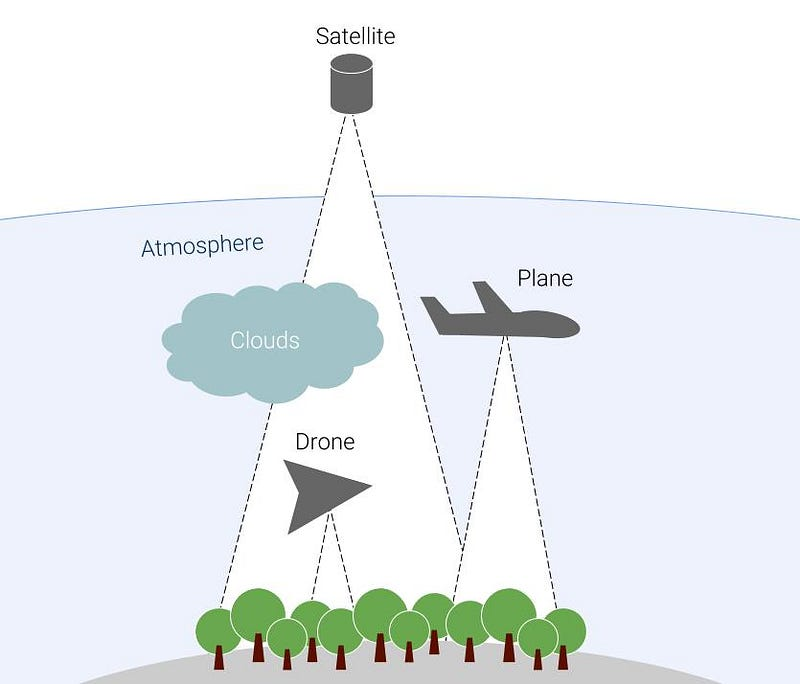

🌳 Tree Species Classification
Classifying tree species using multi-source remote sensing data.

📌 Overview
This project implements an end-to-end geospatial machine learning pipeline for classifying tree species using multi-source remote sensing data (Sentinel-1 SAR and Sentinel-2 optical).
🚀 Features
- Feature extraction from Sentinel-1 and Sentinel-2.
- Vegetation indices calculation (NDVI, EVI, SAVI).
- Integration of terrain and climate data.
- ML Comparison: Random Forest, XGBoost, and LightGBM.
⚙️ Workflow
- Extract geospatial features using Google Earth Engine.
- Perform feature engineering and preprocessing.
- Train ML models (XGBoost performed best).
- Evaluate performance and deploy model.
📊 Results
Best Model: XGBoost
Accuracy: 75%
🛠 Tools & Technologies
Google Earth Engine, Python (scikit-learn, pandas), Remote Sensing (Sentinel-1 & 2).